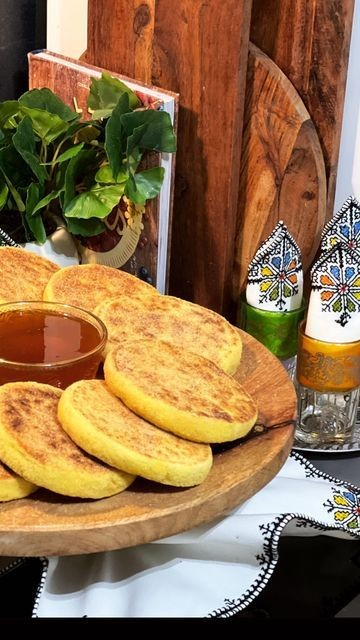

Moroccan Desserts : Harcha

Description
Harcha is a famous Moroccan dessert that you can enjoy either with tea or a warm cofe
- 2 Two cups of semolina
- 1 cup of water
- pinch of salt
- ½ cup of oil
- ½ teaspoon of sugar
- ½ teaspoon of Baking powder
Steps
- Mix the dry ingredients in a bowl.
- Add the oil and mix the ingredients with your hands.
- Gradually add water and knead with your hands until you get a soft dough.
- Sprinkle a little semolina over the dough.
- Place the dough in a suitable pan and flatten it slightly with the palms of your hands. Leave it on the fire until it is well cooked and turns golden..
- Flip the harcha onto a plate, then return it to the pan to cook on the other side.